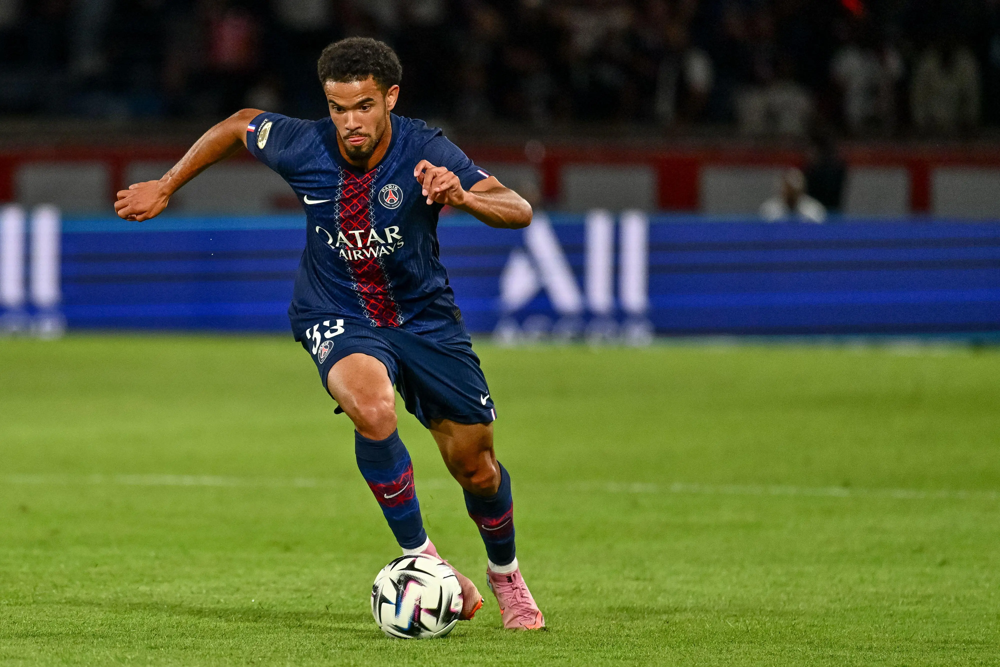

Et un et deux et trois zéro !
Le Paris Saint-Germain s’est imposé avec sérieux et efficacité face au Havre (3–0) au Parc des Princes, lors de la 13ᵉ journée de Ligue 1.
Dès les premières minutes, les Parisiens ont montré leur envie de dominer la rencontre grâce à un pressing haut et une circulation de balle rapide.
La rencontre s’est débloquée juste avant la pause grâce à Lee Kang-in, très inspiré.
Au retour des vestiaires, João Neves profite d’une mauvaise relance pour doubler la mise.
Finalement, Bradley Barcola scelle la victoire.
Avec ce succès, le PSG reprend la tête du championnat et confirme sa montée en puissance.

Warren Zaïre-Emery confirme match après match qu’il est devenu l’un des éléments
les plus déterminants du Paris Saint-Germain. Ces dernières semaines, le jeune milieu parisien
a franchi un cap, affichant une maturité impressionnante pour son âge. Face au Havre, il a
une nouvelle fois éclaboussé la rencontre de son talent : présence physique, capacité à casser
les lignes, vision de jeu et justesse technique. Toujours disponible, il a guidé le tempo au
milieu et offert plusieurs ballons clés qui ont permis au PSG d’installer sa domination.
Sa montée en puissance n’est plus une surprise, mais une évidence : Zaïre-Emery s’impose comme
un patron du milieu de terrain, indispensable au collectif parisien.